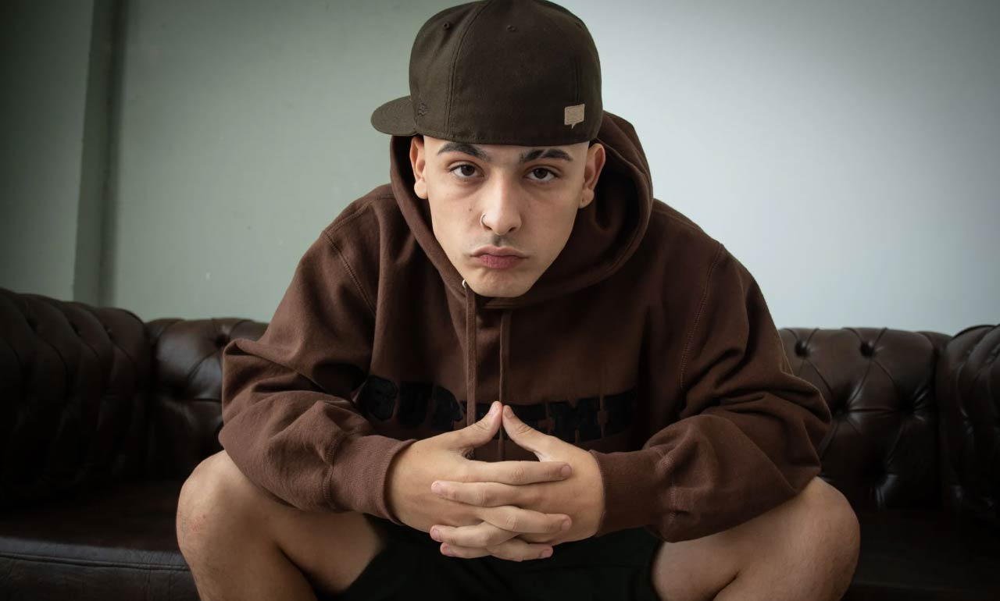
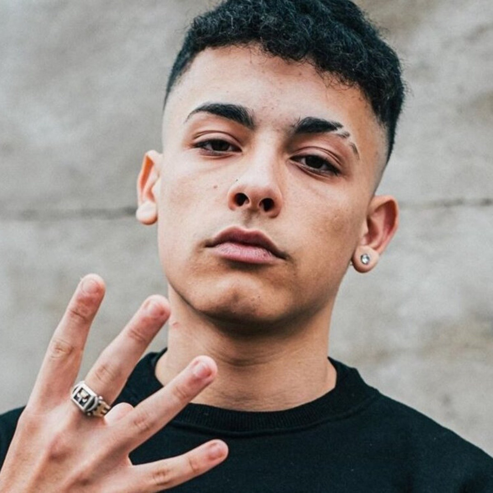

imagen 1
imagen 2
imagen 3
video
audio
Trueno, cuyo nombre real es Mateo Palacios Corazzina, es un rapero, cantante y compositor argentino.
Inició su carrera en las batallas de freestyle y, con el tiempo, se ha consolidado como un artista influyente en la escena musical
de Argentina y América Latina.